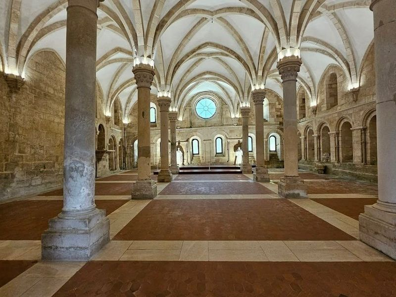
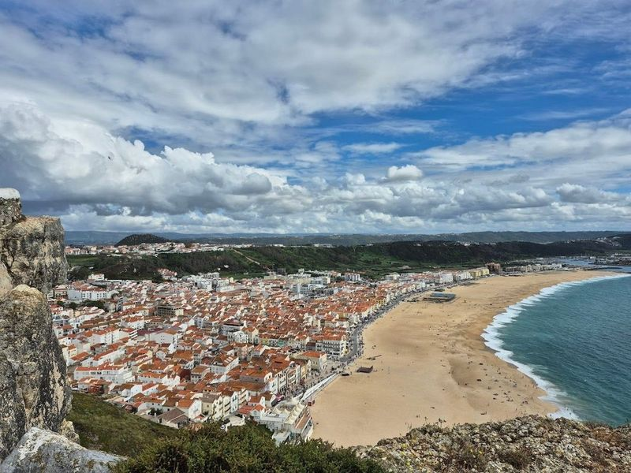
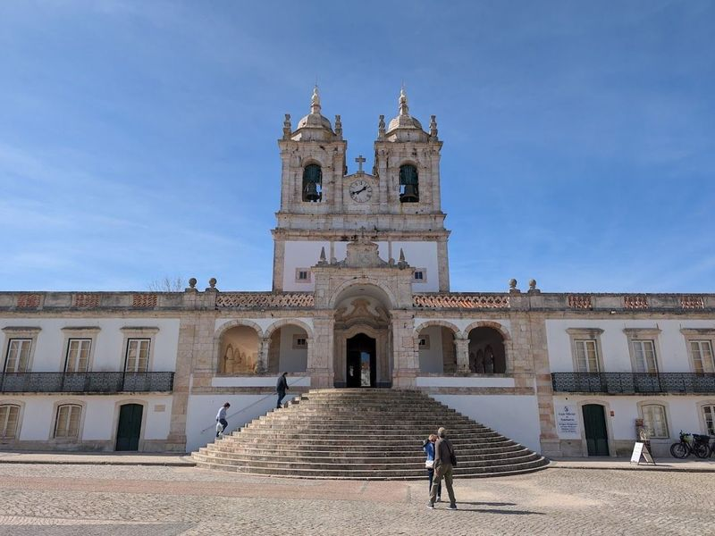
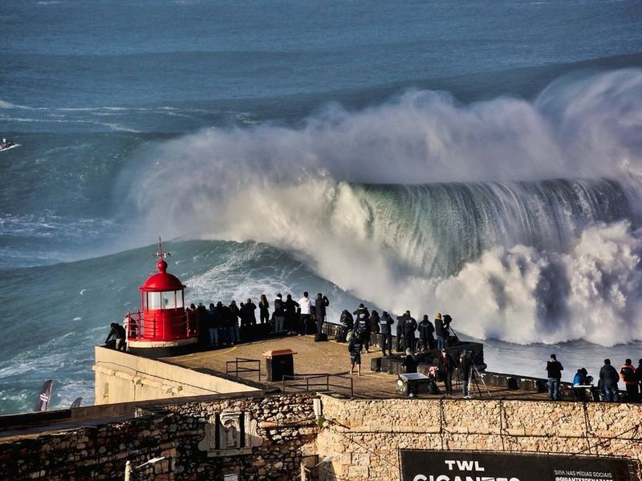
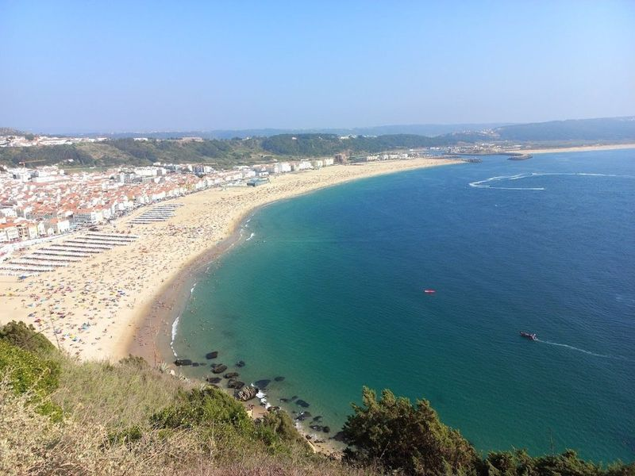
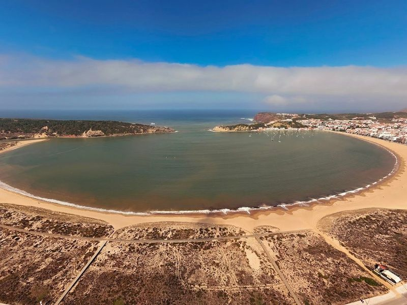
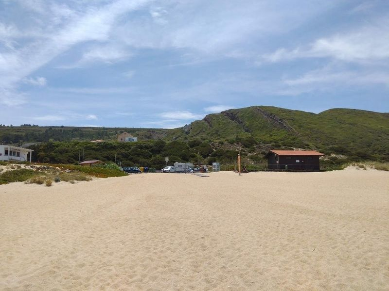
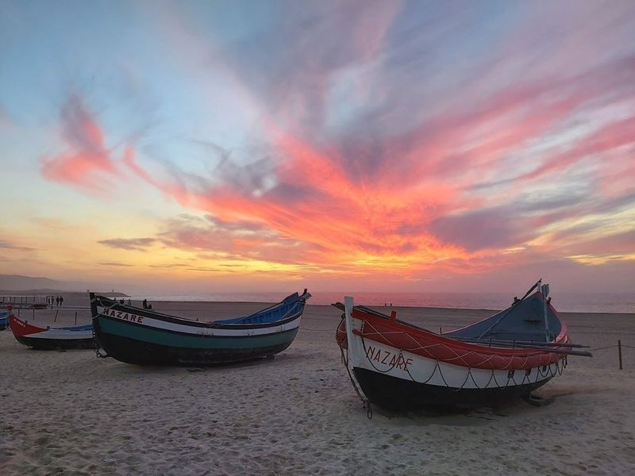
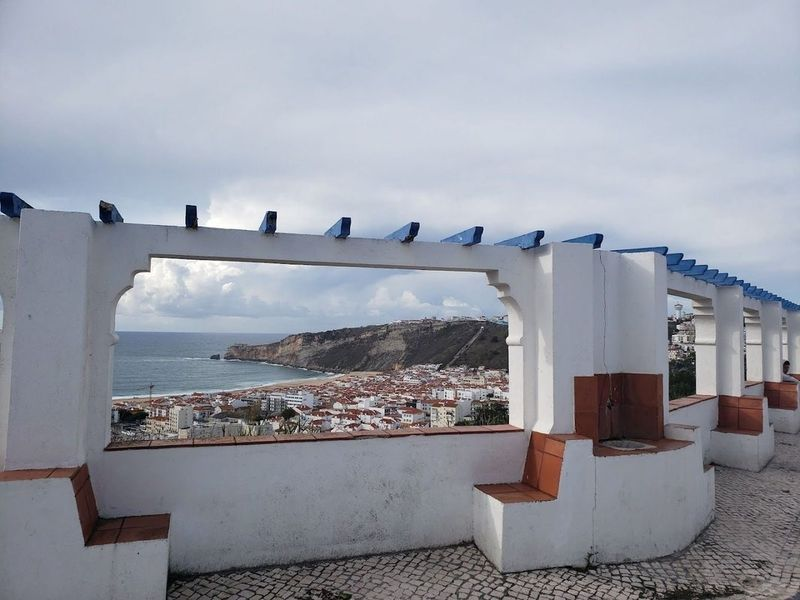
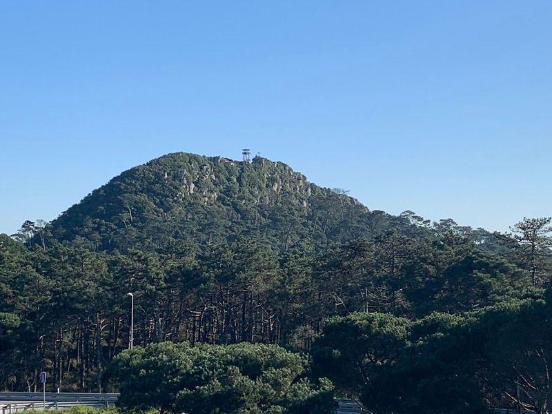

Explore Alcobaça
A Brief History
Alcobaça developed around a Cistercian monastery founded in 1153 by Afonso Henriques after he took Santarém from Moorish rule, with royal tombs placed in its austere nave. The abbey's kitchens, cloisters, and water channels organised one of Portugal's richest agricultural estates through the Middle Ages. The town that spread along the Alcoa stream later supplied labour to the monastery's farms and, after secularisation, to ceramics and light industry in the Leiria district.
Attractions Map
Top Sights & Activities

Monastery of Alcobaça
The Monastery of Alcobaça is a Cistercian monastery with origins dating back to the 12th century. As you enter through its grand gates, be captivated by the Gothic architecture and intricate stone carvings that depict centuries of history. This UNESCO World Heritage site was founded in 1153 by King Afonso Henriques and is considered beautiful Cistercian monasteries in Portugal.

Miradouro do Suberco
Nestled in the heart of Nazare, Portugal, the Miradouro do Suberco is a viewpoint that stands 110 meters above sea level. This lookout offers panoramic vistas of both Praia de Banhos Beach and Praia da Nazare Beach, making it an essential stop for anyone visiting this charming coastal town. Known for its picturesque landscapes and vibrant fishing culture, Nazare draws travelers with its delicious seafood and wooden fishing boats called 'bateiras.'.

Sanctuary of Our Lady of Nazareth
The Sanctuary of Our Lady of Nazareth, also known as Nossa Senhora, is a captivating hilltop church in Nazare that offers a break from the town's coastal attractions. Built in the 14th century with Baroque architectural style, this grand church houses a legendary Virgin Mary statue and is steeped in ancient legend. As Nazare evolves into a year-round destination for surfers and tourists, the town's rich fishing tradition and religious heritage are proudly showcased.

Farol da Nazaré
The Farol da Nazaré, also known as the Nazare Lighthouse, stands proudly on the edge of a cliff, offering panoramic views of the Atlantic Ocean and the renowned crashing waves below. Adjacent to the impressive Forte de Sao Miguel Arcanjo, this landmark provides travellers with an opportunity to explore a museum showcasing surfboards and jet skis donated by daring surfers who have taken on Nazare's mighty waves.

North Beach
Nestled near the charming town of Nazaré, North Beach, or Praia do Norte, is a hidden gem that has gained fame for its colossal surfable waves. Once an undiscovered spot in the big-wave surfing community, it shot to prominence thanks to Garrett McNamara's record-breaking ride in 2011. Today, this beach attracts surfers from all walks of life eager to challenge its impressive swells.

Praia de São Martinho do Porto
Praia de São Martinho do Porto is a wide white-sand beach located in a secluded bay, making it popular with families and sailors. The calm waters make it ideal for kids, while the surrounding Praias offer different attractions such as views of Mangues Mountain and opportunities for wind-related sports. This beautiful scallop-shaped bay is considered picturesque in the country.

Praia do Salgado
Praia do Salgado is a secluded and serene beach, offering a peaceful alternative to the bustling main beaches near Nazare. While parking can be a challenge, the spacious sands provide plenty of room for relaxation and sunbathing. However, caution is advised as the powerful waves make swimming unsafe. The beach's wild and untamed beauty makes it perfect for long walks and observing the crashing waves.

Praia da Nazaré
Praia da Nazaré is a bustling beach known for its large waves, making it popular among surfers. It's the heart and soul of the town, featuring expansive golden sands and azure waters perfect for sunbathing and swimming. The lively promenade, traditional fishing boats, and local seafood restaurants add to the vibrant local culture. While swimming is allowed at this wide beach, caution is advised due to the incessant Atlantic swell.

Miradouro da Pederneira
Miradouro da Pederneira is one of the three main districts in Nazare, Portugal. It is a mainly residential area accessible by car or a funicular carriage that takes passengers up the sharp slope for a small fee. The site is catalogued as a viewpoint.

Monte de São Bartolomeu
Nestled in the heart of a sprawling pine forest, Monte de São Bartolomeu is a captivating destination that draws travellers for both its natural beauty and cultural significance. Each year, the village of Nazaré comes alive as locals gather to celebrate tradition with bonfires and communal feasts featuring grilled pork, chorizo, and black pudding served alongside crusty Portuguese bread.